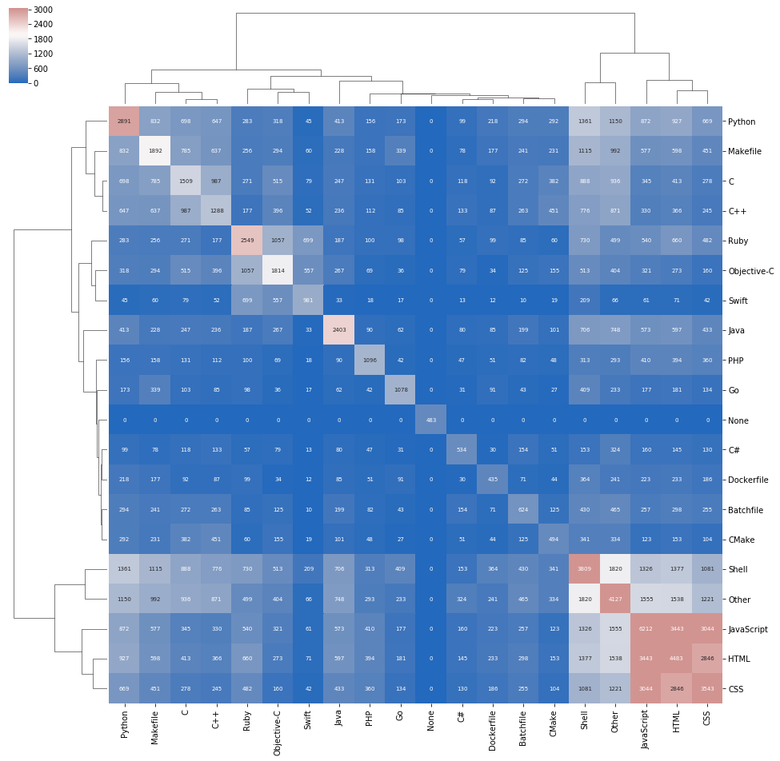

Some visualizations of languages in some of the most popular GitHub repositories.
Heatmap with dendrogram, Chord diagram and Force directed graph.
Google BigQuery has a few open datasets, of which GitHub data is one. However, one can get only 16k rows in a query without paying extra for storage. So, I got a list of 16k most watched repositories from sample_repos (which is a list of 400k repositories which got more than 2 starts during Jan-May 2016). GitHub data is available at Google Big Query.
SELECT
sample_repos.repo_name,
sample_repos.watch_count,
languages.LANGUAGE
FROM
`bigquery-public-data.github_repos.languages` languages
INNER JOIN
`bigquery-public-data.github_repos.sample_repos` sample_repos
ON
languages.repo_name = sample_repos.repo_name
WHERE sample_repos.repo_name IN (
SELECT repo_name[OFFSET(0)]
FROM `bigquery-public-data.github_repos.commits`)
ORDER BY sample_repos.watch_count DESC
LIMIT 16000
The most insight into the usage of different languages can be obtained by a dendrogram with a heatmap. Only the top 19 languages by number of repositories they appear in have been taken, and the rest of almost 200 languages have been lumped into "Others". Each sqare represents the number of repositories that have both the languages. The diagonal elements are the total number of repositories for that particular language. White and red indicate more number of repositories, and blue less.
The most commonly used single languages are Python, JavaScript, HTML, CSS and Shell. HTML/CSS/JavaScript have the most number of co-occurances and is indicated in red. C/C++/Makefile form another strong group in light blue. Python also seems to form a group with C/C++/Makefile, but looking at the number of repositories they share, we can conclude that its not a strong co-occurance. Another group emerges with Ruby/Objective-C/Swift.

I find that the chord diagram is not a very good representation of the data because:
Still, it is a good visualization to show that almost every language is used in conjunction with another one.
This force-directed graph shows the least amount of information of all. The distance is inversly proportional to the number of repositories that share those two languages. However, the steady state just shows them in a symmetric pattern